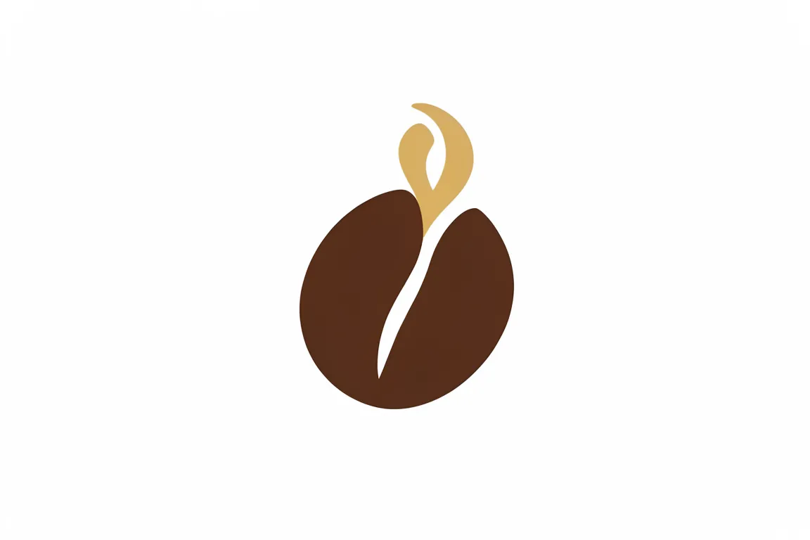

logo · 2012–now · also: Flat logo, Flat design mark, Material-era logo
The gloss goes away. A simple symbol or a geometric sans word in 2–4 bright flat colours, with no gradient, no shadow and no bevel, drawn to work as a 24 px app icon first.

Core thesis
On a screen honesty is flat colour: a mark is a set of clean shapes that read at icon size and scale with no loss.
Design principles
Fill each shape with one flat colour; no gradient, no shadow, no highlight.
Use 2–4 bright colours of the same lightness, side by side, or one colour on white.
Build the symbol from squares, circles and rounded rectangles on a 24 or 48 unit icon grid.
Round corners at 8–20% of the shape size, or use none, but use the same rule for every corner.
Set any letters in a geometric sans with a single-storey a and round dots, at one weight.
Draw a 24 px icon version first, then scale up; each part must be at least 2 px at 24 px.